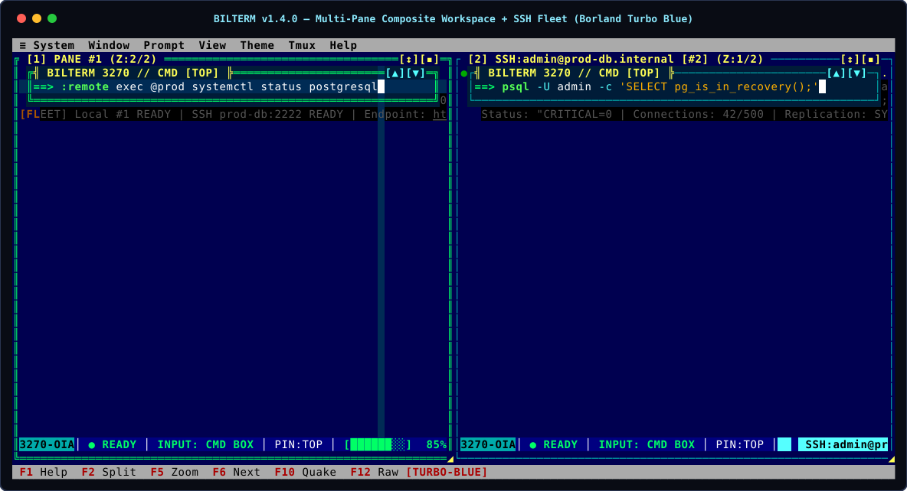

Composite panes
Floating command prompt over a scrolling PTY canvas with a 3270 OIA status bar. No SIGWINCH thrash.
IBM 3270 × Borland Turbo Vision × TRON MCP
Composite terminal panes in Rust
curl -fsSL https://raw.githubusercontent.com/bsommers/bilterm/main/scripts/install.sh | bash
Linux & macOS. Installs to ~/.local/bin with manpage, completions and desktop launcher. Read the script first if you like.

Multi-pane composite workspace, Turbo Blue theme.
Floating command prompt over a scrolling PTY canvas with a 3270 OIA status bar. No SIGWINCH thrash.
Leave the whole split layout running in a daemon and resume later.
bilterm --mcp, JSON-RPC bilterm ctl, TOML playbooks.
Turbo Blue, 3278 green, 3279 amber, TRON Legacy, plus .itermcolors import.
Fan commands out to tagged hosts and tmux sessions.
--gui on Linux, macOS and Windows with per-pane font scaling.